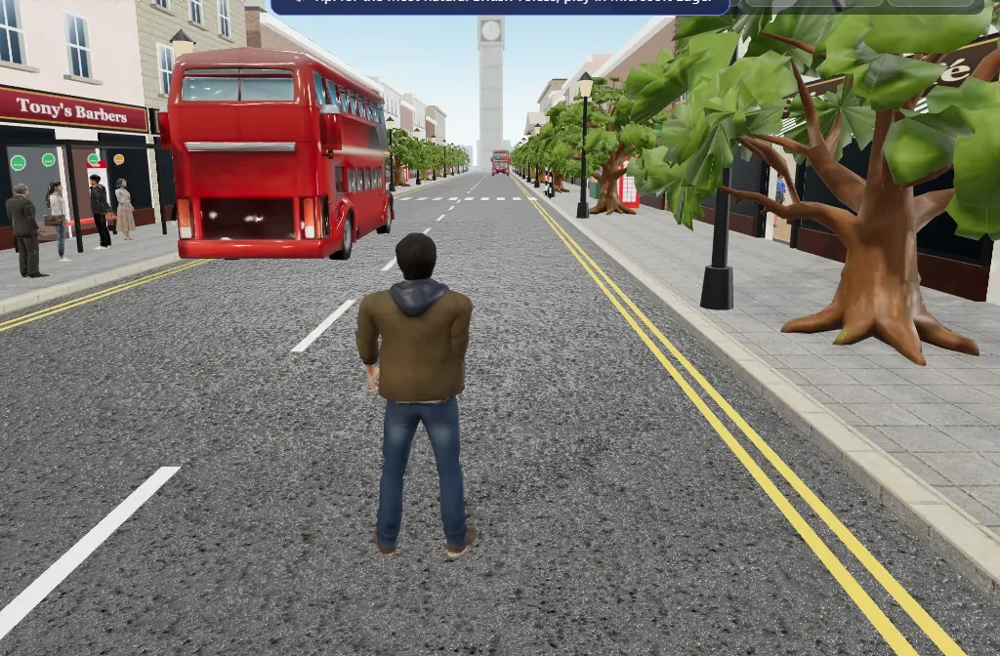

From first words at five to IELTS at eighteen and beyond, every site
here is built for a different age and goal. Read a short introduction,
check who it is for, then open it in a new tab.
Pick by age or goal. Every site opens in a new tab, so you can come
back and try another.
Showing 6 of 6 sites

Teens & adults01
Speak Britain
Everyday conversation role-play
Walk a British high street and talk to over fifty locals —
shopkeepers, baristas, bus drivers and museum guides — each
one speaking out loud. Answer with your own voice, or type your
reply if you would rather, and tap Help when you get stuck.
Who it’s for
Teenagers and adults who know some English and want to rehearse
real, everyday conversations somewhere that feels like Britain.
Learn first words with Hoot the Owl across 12 topic worlds —
600 words to explore, pronunciation practice, and eight games that
make reading feel like play.
Who it’s for
Children aged 5–7 who are just starting school English, or
KS1 pupils who need to build confidence with everyday vocabulary.
A game-filled way to grow vocabulary, spelling, pronunciation and
reading — built around the UK KS2 curriculum, so practice at
home matches what happens in class.
Who it’s for
Children aged 7–11 who can read simple words and are ready to
spell, decode and understand longer texts.
A vocabulary and pronunciation playground for secondary English,
where learners stretch beyond everyday words and get comfortable
saying them out loud.
Who it’s for
Students aged 11–14 in KS3, or anyone who has the basics and
wants a richer, more precise vocabulary.
Learn the British English people actually speak — everyday
phrases, idioms and slang, linking words and sentence structure
— then practise out loud with an AI conversation coach.
Who it’s for
Teenagers and adults who already know some English and want to
sound more natural and confident when they speak.
Full mock tests for Reading, Listening, Writing and Speaking,
marked against the real IELTS tables — plus an AI coach that
turns your ideas into structured sample answers.
Who it’s for
Students preparing for Academic or General IELTS who want an
honest band estimate and to see exactly where the marks are lost.
Sites get you practising. A teacher gets you speaking.
The six sites above are for self-study. If you would rather learn
with a human teacher, Preply has tutors for every age and goal
— and your first lesson is 30% off.
Band Nine runs full Academic and General mock exams under real
IELTS conditions: timed Reading and Listening papers, 13 Writing
tasks and a recorded Speaking test. Every paper is marked against
the real band descriptors, so you get a band score plus written
feedback on exactly where the marks were lost.